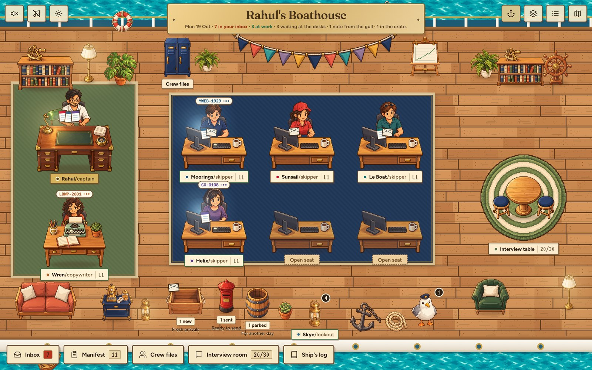

Rahul Jha
For HUD · Senior Software Engineer, Design
You're hiring someone to make agent runs, evaluation results and quality feedback understandable without hiding the details that matter. I design in code, and I've spent this year running my own work through agents I built and graded. The first piece below I built for this application: it replays a finished run and grades it, and every check points at the step that decided it.
Reach me by email, see my code on GitHub, or find me on LinkedIn. Résumé: web · PDF.
The work, in this order
- Agent runsBuilt for this application: replay a run, grade it

The captainAgents graded blind against my own history Skills and agentsEvery skill and agent I’ve built, and the evals that hold them back
Skills and agentsEvery skill and agent I’ve built, and the evals that hold them back Project 831Shipped, used every day, changed by what broke
Project 831Shipped, used every day, changed by what broke- LearningsOne read per failure, written the week it happened
 Build My QuoteEleven variants and a user test before the A/B
Build My QuoteEleven variants and a user test before the A/B Court booking on coss uiBooking on Cal.com's design system
Court booking on coss uiBooking on Cal.com's design system HelixWhere each brand’s design system lives as code
HelixWhere each brand’s design system lives as code- Helix playgroundHelix’s ideas on two invented brands, to tap around in
The captain's deck also runs here, on invented work: work it yourself. Nothing you do there is saved.
Everything else is on the home page.
Your posting, line by line
- Review is the same run, replayed“Make agent runs, evaluation results, reward signals, and quality feedback understandable and actionable”
- The captain's evals: 46 situations, graded on seven dimensions“Familiarity with AI agents, evaluations”
- Build My Quote: session recordings, then 48 people“Talk with users, observe where they struggle”
- Learnings“ship interfaces that improve through use and feedback”
- Helix“Experience creating reusable interface patterns as a product grows”
- BiteSpeed: the only designer, then its AI agent“Experience working independently in an early-stage company”
Hours
I work from Bengaluru. Singapore is 2 hours 30 minutes ahead of me, so a Singapore working day overlaps almost all of mine.